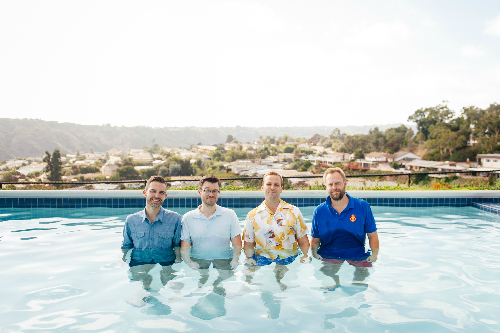

From the gray desolation of Lansing, Michigan in the early 2000s to the faded gold of California in 2018, The Blanks have somehow been a rock and roll band for 16 years. They started as 20 year-old punk kids in garages, basements and dive bars in the middle west, figuring out how to play their instruments and write their first songs.
After forming in 2002, they soon released The Center Street Sessions, an EP of 4-track cassette recordings they made in a basement bedroom. They soon followed that up with another home recorded release, this time an overly ambitious full-length album called Kiss You On The Mouth. In 2004, they went on their first tour and cut a live album at the legendary CBGB, before its demise a couple years later. In 2005, they recorded in a studio for the first time with garage rock royalty, Jim Diamond, at an old chicken factory in downtown Detroit. These songs became the album Love You Too, their first professional-ish record, despite being banged out in about 12 hours.
In late 2005, The Blanks called it quits as each band member ended up migrating to different parts of the country, settling down in San Diego, San Francisco and St. Louis. Over the next decade, they would still find themselves together sporadically, in various garages and dive bars along the west coast, and before they knew it, they had accumulated more new songs than they knew what to do with. They finally made their way back into the studio and recorded an album of new material at Rarefied Recording in San Diego. The results are the first new Blanks record in 13 years, Yellow Fading Glimmer, in which you now hold in your hands or see as a tiny dot on your screen.
The Blanks sincerely hope you enjoy a song or two and find yourselves singing and dancing, ideally with a friend.